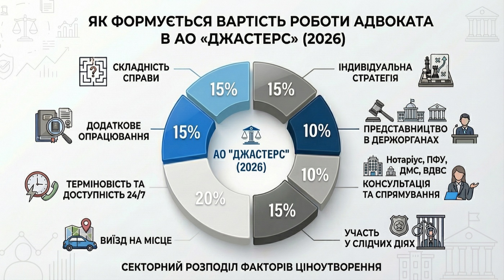

Послуги / Ціноутворення
Як формується вартість послуг адвоката в АО «ДЖАСТЕРС»
Ця інфографіка демонструє питому вагу кожного ключового фактора у фінальній вартості наших послуг.

Як видно з наведеної схеми, структура вартості правової допомоги АО «ДЖАСТЕРС» є збалансованою та відображає реалії юридичної практики. Ось що стоїть за цими відсотками:
- Базові фактори (складність справи, стратегія): Складають основу (сумарно близько 30%) та відображають інтелектуальну складову — аналіз ризиків, розробку унікального плану захисту та оцінку складності правової ситуації.
- Ресурсні фактори (консультації, держоргани, слідчі дії): Відповідають за безпосередню активність адвоката (сумарно понад 35%). Це час, витрачений на комунікацію, представництво ваших інтересів у судах та держорганах, а також участь у процесуальних діях.
- Фактори сервісу та оперативності (терміновість 24/7, виїзд на місце): Відображають нашу готовність бути поруч у критичний момент (сумарно близько 35%). Ми розуміємо, що правова допомога може знадобитися миттєво, тому закладаємо ресурси для цілодобової доступності та мобільності.
Наші принципи роботи з клієнтами
- Попередній кошторис: Після першої консультації та вивчення матеріалів справи ви отримаєте детальний розрахунок вартості, заснований на цій моделі.
- Фіксована ціна: У більшості стандартних справ ми пропонуємо фіксовану вартість етапу роботи, що гарантує відсутність неприємних сюрпризів.
- Гнучкість: У складних та довготривалих проектах ми пропонуємо комбіновані моделі (фіксована ставка + погодинна оплата за окремі види робіт), про які домовляємося заздалегідь.
- Звітність: Ви завжди будете отримувати детальні звіти про виконану роботу та витрачений час, щоб контролювати фінансову сторону питання.